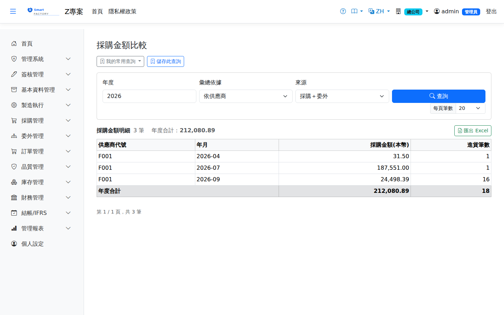

採購金額比較Purchase Amount
依年度×月份彙總採購金額（可切換供應商／品號維度），比較期間趨勢與供應商集中度。金額以「本幣」呈現：明細含稅總額 × 進貨時匯率，多幣別不會直接混加。統計含委外加工費，可用「來源」切換。Summarizes purchase amounts by year and month (switchable between supplier and product) to compare trends and supplier concentration. Amounts are shown in local currency: the tax-inclusive line total × the rate at receipt, so currencies are never added up directly. Outsourcing fees are included, and the "Source" filter switches between them.

查詢Search
欄位說明Field reference
查詢條件Query criteria
| 條件Condition | 說明Guide |
|---|---|
| 年度Annual | 必填Required 要彙總的年度Year to summarize |
| 彙總依據Group By | 以供應商或以品號為彙總維度Group by supplier or by product |
| 來源Source | 「採購＋委外」（預設）／「僅採購進貨」／「僅委外收貨」。與「供應商交期達成率」用同一組值，兩張表對得起來"Purchase + outsourcing" (the default), "Purchase receipts only" or "Outsource receipts only". It uses the same values as the Supplier Delivery Rate report, so the two reconcile |
報表欄位Report fields
| 欄位Field | 說明Guide |
|---|---|
| 供應商代號 / 品號Supplier / Product | 欄名隨「彙總依據」變動The column name follows the "Group By" selection |
| 年月Month | 採購發生的月份Month in which the purchase took place |
| 採購金額(本幣)Purchase Amount (Base) | 該月的金額合計（依「來源」決定是否含委外加工費），外幣已依交易匯率換算為本位幣Total amount for the month — whether outsourcing fees are included depends on "Source" — with foreign currencies already converted to local currency at the transaction rate |
| 進貨筆數Receipts | 該月的單據筆數（含委外時跨來源去重後相加）Number of documents in the month; when outsourcing is included the two sources are de-duplicated before being added |
存成常用查詢Saving the query
查詢列上方有「我的常用查詢」與「儲存此查詢」，可把這一組條件存起來下次一鍵重跑。⚠️ 這張畫面選的是一個年度，所以期間選項只有「今年／去年」兩種。存成「上個月」會靜靜變成一整年，因此刻意不提供。用法與注意事項見常用查詢。Above the search bar are "My saved queries" and "Save this query", which store the current criteria for one-click reuse. ⚠️ This screen selects a year, so the only period options are "this year" and "last year". "Last month" would quietly widen into a whole year, so it is deliberately not offered. See saved queries for how they work and what to watch for.